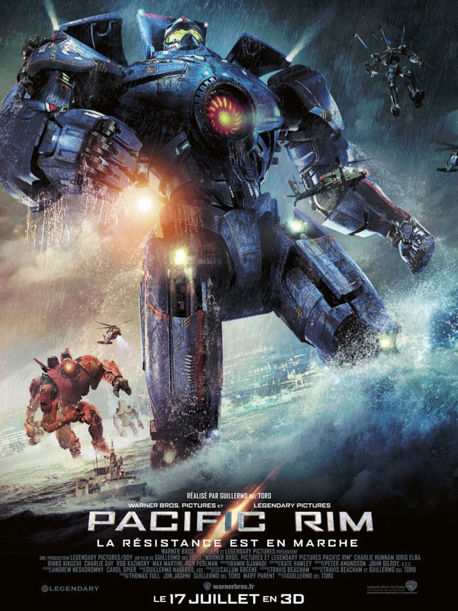

Nous avons récemment plongé dans un tourbillon cinématographique captivant. Entre émotions fortes et éclats de rire, notre escapade filmique nous a transportés à travers des mondes variés. Des intrigues envoûtantes, des performances exceptionnelles, et des moments inoubliables ont ponctué nos séances. Chaque film a ajouté une nuance unique à notre palette cinéphile, créant des souvenirs partagés qui resteront ancrés dans nos discussions passionnées sur le septième art. D'ailleurs, nous avons prévu de partager nos impressions à tour de rôle sur ces pépites cinématographiques récentes, ajoutant une dimension interactive à notre exploration cinéphile commune.
La pépite d'Hayder
Vous avez déjà ressenti cette montée d'adrénaline qui vous transporte dans un monde épique où des robots géants, les Jaegers, affrontent des monstres aliens gigantesques appelés Kaijus ? Eh bien, c'est exactement ce que vous vivrez avec "Pacific Rim" ! Imaginez une fusion de technologie de pointe, de courage humain et d'une épopée intergalactique. Les scènes de combat sont tout simplement époustouflantes, avec des robots aussi grands que des gratte-ciel se battant contre ces créatures monstrueuses. C'est une véritable aventure cinématographique qui vous emporte dans un tourbillon d'action, de suspense et de camaraderie entre les pilotes de Jaegers. Si vous recherchez une expérience visuelle palpitante, "Pacific Rim" est le film qui vous propulsera dans une bataille épique pour la survie de l'humanité !

Figure 1 : Affiche du film Pacific Rim
La pépite de Thibault
Entrez dans un univers où les singes deviennent les maîtres de la planète dans 'La Planète des Singes'. Ce film, c'est tout simplement une claque visuelle ! Les effets spéciaux sont d'une qualité exceptionnelle, créant des singes incroyablement réalistes qui vous feront oublier qu'ils sont le fruit de la magie du cinéma.Mais ce n'est pas seulement un spectacle pour les yeux. L'histoire est captivante, pleine de rebondissements et de moments épiques. César, le leader charismatique des singes, devient une figure emblématique de la révolution simienne, et on ne peut s'empêcher de ressentir une connexion émotionnelle avec ces personnages hors du commun.Et parlons-en de l'émotion ! 'La Planète des Singes' offre une palette d'émotions allant de l'excitation à l'émerveillement en passant par des moments poignants. C'est un film qui vous prend aux tripes, vous laissant complètement absorbé par son monde captivant.Bref, si vous êtes à la recherche d'un film qui marie à la perfection action, effets spéciaux et une histoire qui donne matière à réfléchir, 'La Planète des Singes' est LE film à voir. Une expérience cinématographique qui m'a laissé enthousiaste et comblé, et que je recommande à tous les amateurs de grands spectacles !